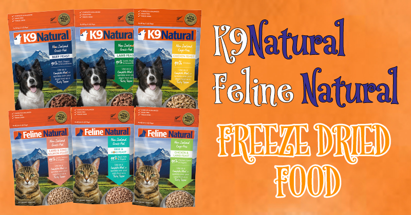
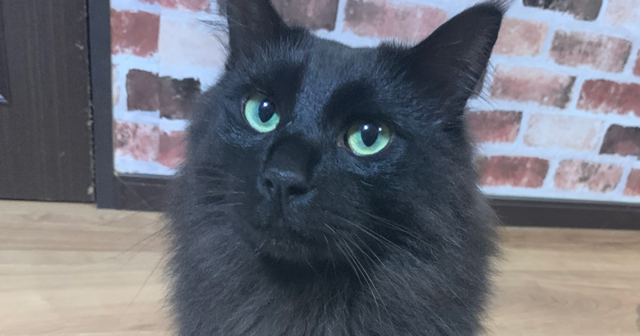

当店厳選フード

我が家は皆手作りご飯を食べておりますが、これなら与えても良いと思えるフードのみを展開しております。
どの商品を選んでも安心してお買い物いただけるといった当店のコンセプトを考えると、数少ないフードや商品のみになってしまいます。
ただ何点かフードのラインナップを追加しようとは検討しております。
さすがに1種類だけというのも問題ですしね。笑
こちらも随時追加してまいりますのでお楽しみに！
僕自身の愛犬・愛猫のフードや、ご飯に対する思考をこちらのページにも記載して参ります！
K9Natural
Filine Natural

低温フリーズドライ製法のK9 Natural・Filine Naturalです。
通常のドライフードの高温製法ではないので、栄養価が残りやすく、排便量も少なく消化効率も高いフードになります★
原産国もニュージーランドで食品の品質管理が高い国なのもGOOD！
そのままあげても、潰してふりかけにしても、水で戻してあげたり、お好みのあげ方をお試しください。
サプリは手作りご飯にも毎日入れてます★

グレインフリーフード
の格差

活性酸素と戦う
抗酸化物質・抗酸化作用

ドライフード信者に
なりすぎないように